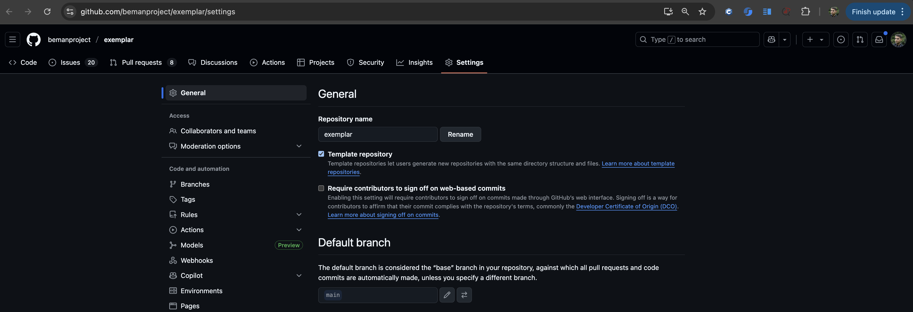

Beman Standard
The Beman Standard
This document specifies requirements and recommendations for Beman project libraries. Its goal is to create consistency facilitating the evaluation of, and contribution to Beman libraries.
Introduction
Core principles
This standard is driven by four core principles:
-
[core.quality] Highest quality. Standards track libraries impact countless engineers and, consequently, should be of the highest quality.
-
[core.production_ready] Production-ready. Production feedback necessitates reliable, well-documented software.
-
[core.industry_standard] Industry standard technology. Where there’s industry consensus on best practices, we should take advantage. Innovation in tooling and style is not our purpose.
-
[core.inclusive] Welcoming and inclusive community. Broad, useful feedback requires an unobstructed path for using, reviewing, and contributing to Beman libraries. This principle encompasses ergonomics, cross-industry participation, and cultural accommodation.
Changing this document
This is a living document that adapts to evolving best practices and community needs. To make changes:
-
Create a discourse topic detailing the change and how it aligns with the core principles.
-
After some community discussion, create a PR with the actual change on GitHub and apply the Beman leads label. The PR should also link to the discourse topic.
-
Continue discussions on the PR and discourse topic.
-
Await a leads decision based on the community feedback.
Note: When making minor changes such as fixing typos, correcting grammar mistakes or improving clarity, some of the previous steps may be skipped - a PR can be directly created.
Conventions
This standard consists of entries that include a lowercase, dot-separated identifier for referencing.
With the exception of the core principles, these entries are either requirements or recommendations.
-
Requirements must be followed in order to conform to this standard. These entries are prefixed by "Requirement:".
-
Recommendations should be followed in general, but specific circumstances may make this a less-than-ideal choice. Libraries not following a specific recommendation can still conform to this standard. These entries are prefixed by "Recommendation:".
License
[license.approved]
Requirement: All Beman libraries must be licensed under an approved license. These are:
[license.apache_llvm]
Recommendation: A Beman library should be licensed under the Apache License v2.0 with LLVM Exceptions (first recommended license in license.approved).
Use the exact content from beman/LICENSE into your library’s LICENSE file.
[license.criteria]
Requirement: All approved licenses must meet the following requirements:
-
Simple to read and understand.
-
Permission without fee to copy, use and modify the software for any use (commercial and non-commercial).
-
Requires that the license appears on all copies of the software source code.
-
Must not require that the license appears with executables or other binary uses of the library.
-
Must not require that the source code be available for execution or other binary uses of the library.
REPOSITORY
[repository.name]
Requirement: The repository must be named after the library name excluding the beman. prefix. It must not contain a target C++ version.
Examples: A beman.smart_pointer library’s repository should be named smart_pointer. A beman.optional library’s repository should be named optional.
Bad examples: smartpointer or optional26.
[repository.default_branch]
Requirement: The repository must have main as default branch.
You can change the default branch via default repository settings menu - e.g., exemplar/settings.
Here is snapshot of default branch settings in exemplar repository:

[repository.codeowners]
Requirement: There must be a .github/CODEOWNERS file with a relevant set of codeowners. Please check exemplar: CODEOWNERS.
[repository.code_review_rules]
Requirement: There must be a default Rulesets configured for any Beman repository (library, infrastructre, documentation, etc.)
Use the following example:
-
Go to your repository’s settings - e.g., exemplar/settings.
-
Go to
Code and automation/Rules/Rulesets- e.g., exemplar/settings/rulesets. -
You should have a single ruleset named
Default- e.g., exemplar/settings/rulesets/beman. -
Create (via
New rulesetbutton) or update (click onDefaultruleset) it to include the following rules:-
Rulset Name:
Default -
Enforcement status:
Active -
Bypass list: Check
Organization adminandRepository admin -
Target branch: Check
Include default branch -
Go to
Rulessection-
Check
Restrict deletionsandBlock force pushes -
Check
Require a pull request before mergingand configure it to haveRequired approvals: 1,Require review from Code OwnersandAllowed merge methods: Merge, Squash, Rebase.
-
-
-
Click
Createto save the ruleset.
Here is a snapshot of default branch settings in exemplar:

[repository.disallow_git_submodules]
Recommendation: The repository should not use git submodules. Check cmake.use_find_package for alternatives.
Known exceptions:
-
https://github.com/mpark/wg21[mpark/wg21: Framework for Writing C Committee Papers]: A non-C submodule designed for drafting ISO C++ papers using LaTeX or Markdown.
Release
[release.github]
Requirement: All Beman libraries must be released using GitHub Releases.
[release.version]
Recommendation: The versioning of releases should adhere to the following guidance:
-
The git tag of each version is prefixed with a 'v', e.g.,
v1.2.3 -
Beman libraries not yet ready for the review process are version
0.y.z -
Beman libraries that are ready for the review process but have not yet transitioned to "Production Ready" status are version
1.y.z -
Beman libraries that have passed the review process and become "Production Ready" are version
x.y.zwherex>= 2. -
Except when it conflicts with the above guidance on the major version, Beman library version numbers should roughly observe semantic versioning:
-
New releases that fix bugs without adding new functionality should bump the patch version
-
New releases that make changes or add new functionality without any API-breaking changes should bump the minor version
-
New releases that have API-breaking changes should bump the major version (unless it is
0or1, as stated above).-
These major version bumps should occur even if the library is in "Production ready. API may undergo changes" status.
-
If the library is in "Production ready. Stable API" status, then the major version shouldn’t change (because the library shouldn’t publish API-breaking changes).
-
-
[release.notes]
Recommendation: Release should include:
-
A title that contains the release version, e.g.,
v1.2.3. (Check visual example for the field location.) -
Description. (Check visual example for the field location.)
2.1. A "What’s changed" section listing all changes.
2.2. A "New Contributors" section listing all first-time contributors.
2.3. A "Full Changelog" link to the complete list of commits.
2.4. A "Contributors" section listing all contributors to this release.
Note: All four of the above sections can be autogenerated by GitHub.
Note: If desired, maintainers may add additional detail to the release notes, such as handwritten summaries of what changed, an explanation of the purpose of the release, and a reorganization of the changelog specifying which changes are breaking changes, new features, bug fixes, build system changes, or documentation updates.
Complete examples can be found in https://github.com/bemanproject/exemplar/releases.
Here is a snapshot of notes for a particular release in exemplar:

[release.godbolt_trunk_version]
Recommendation: A Beman library should have at least a trunk version deployed on godbolt with nightyclone mode activated. Check tutorial: Compiler Explorer Deployment.
Top-level
The top-level of a Beman library repository must consist of CMakeLists.txt, LICENSE, and README.md files.
[toplevel.cmake]
Requirement: There must be a CMakeLists.txt file at the repository’s root that builds and tests (via. CTest) the library.
README.md
[readme.title]
Recommendation: The README.md should begin with a level 1 header with the name of the library optionally followed with a ":" and short description.
Examples:
# beman.sender_receiver: Scalable Asychronous Program Building Blocks[readme.badges]
Requirement: Following the title, the README.md must have a badge list. Examples: library status ([readme.library_status]), CI status, code coverage, Compiler Explorer example.
Example:
[](https://github.com/bemanproject/beman/blob/main/docs/beman_library_maturity_model.md#the-beman-library-maturity-model)
[](https://github.com/bemanproject/exemplar/actions/workflows/ci_tests.yml)
[](https://github.com/bemanproject/exemplar/actions/workflows/pre-commit-check.yml)
[](https://coveralls.io/github/bemanproject/exemplar?branch=main)

[](https://godbolt.org/z/4qEPK87va)Use exactly one of the following entries for the library status badge.
For "Under development" (which should be used by new libraries), use:
[](https://github.com/bemanproject/beman/blob/main/docs/beman_library_maturity_model.md#the-beman-library-maturity-model)For "Production ready. API may undergo changes," use:
[](https://github.com/bemanproject/beman/blob/main/docs/beman_library_maturity_model.md#the-beman-library-maturity-model)For "Production ready. Stable API," use:
[](https://github.com/bemanproject/beman/blob/main/docs/beman_library_maturity_model.md#the-beman-library-maturity-model)For "Retired. No longer maintained or actively developed," use:
[](https://github.com/bemanproject/beman/blob/main/docs/beman_library_maturity_model.md#the-beman-library-maturity-model)Use exactly one of the following entries for the standard target status badge.
For C++26, use:
For C++29, use:
If the library has been deployed onto Compiler Explorer, add this badge and replace the link with the link of the example code taken from Compiler Explorer:
[](https://godbolt.org)[readme.purpose]
Recommendation: Following the badges list and a newline, the README.md should contain a one line summary describing the library’s purpose.
[readme.implements]
Recommendation: Following the purpose and a newline, the README.md should indicate which papers the repository implements. Use the following style:
**Implements**: [`std::optional<T&>` (P2988R5)](https://wg21.link/P2988R5) and
[Give *std::optional* Range Support (P3168R1)](https://wg21.link/P3168R1).Note that specifying the revision number is optional.
[readme.library_status]
Requirement: Following the implements section and a newline, the README.md must indicate the current library status with respect to the Beman library maturity model. An extra badge must be added to the README.md to visually indicate the library status (check [readme.badges]). Note: The full library status history can be found in the GitHub release notes.
Use exactly one of the following entries for the status line:
**Status**: [Under development and not yet ready for production use.](https://github.com/bemanproject/beman/blob/main/docs/beman_library_maturity_model.md#under-development-and-not-yet-ready-for-production-use)or
**Status**: [Production ready. API may undergo changes.](https://github.com/bemanproject/beman/blob/main/docs/beman_library_maturity_model.md#production-ready-api-may-undergo-changes)or
**Status**: [Production ready. Stable API.](https://github.com/bemanproject/beman/blob/main/docs/beman_library_maturity_model.md#production-ready-stable-api)or
**Status**: [Retired. No longer maintained or actively developed.](https://github.com/bemanproject/beman/blob/main/docs/beman_library_maturity_model.md#retired-no-longer-maintained-or-actively-developed)[readme.license]
Requirement: Following the library status line and a new line, the README.md must have a LICENSE section.
Use exactly the following format:
## License
beman.exemplar is licensed under the Apache License v2.0 with LLVM Exceptions.
<!-- Other optional mentions go on this line ... >or
## License
beman.exemplar is licensed under the Boost Software License 1.0.
<!-- Other optional mentions go on this line ... >or
## License
beman.exemplar is licensed under the MIT License.
<!-- Other optional mentions go on this line ... >or
## License
beman.exemplar is licensed under the Boost Software License 1.0 and under the ... .
<!-- Other optional mentions go on this line ... >CMake
[cmake.default]
Recommendation: The root CMakeLists.txt should build all targets by default (including dependency targets).
[cmake.use_find_package]
Recommendation: The root CMakeLists.txt should fetch all dependency targets via CMake find_package.
Use the following style:
find_package(<PackageName> [REQUIRED])See [cmake.skip_tests] in this document for a working example or exemplar/blob/main/CMakeLists.txt.
[cmake.project_name]
Recommendation: The CMake project name should be identical to the beman library name.
[cmake.passive_projects]
Requirement: CMake projects must not adjust user-specified compilation flags.
User-provided compilation flags, whether specified via presets, command-line options, or toolchains, must not be modified by CMake projects. Therefore, CMake projects may not set variables that impact compilation flags such as CMAKE_CXX_FLAGS and CMAKE_CXX_STANDARD, as this would override user settings.
For common compiler/flag combinations, it is recommended to provide CMake presets as a convenient alternative for users.
If specific compiler flags are essential for project functionality (e.g., C++ standard features), use utilities like check_cxx_source_compiles to detect support and provide a helpful error message suggesting appropriate flags for the user’s compiler.
[cmake.library_name]
Recommendation: The CMake library target’s name should be identical to the library name.
Examples:
add_library(beman.smart_pointer)
#...[cmake.library_alias]
Requirement: The CMake code must create an alias of the library target named beman::<short_name>. This target is intended for external use.
Examples:
add_library(beman::smart_pointer ALIAS beman.smart_pointer)
#...[cmake.target_names]
Recommendation: All targets, aside from the library target, should begin with a <library_name>. prefix
add_executable(beman.smart_pointer.examples.basic)
#...
add_executable(beman.smart_pointer.tests.roundtrip)
#...[cmake.passive_targets]
Requirement: External targets must not modify compilation flags of dependents.
Therefore, target_compile_features (e.g., cxx_std_20) must not be used because it modifies the compilation environment of dependent targets. Compiler support for required features should be determined at CMake configuration time using check_cxx_source_compiles.
Furthermore, target_compile_definitions with PUBLIC or INTERFACE visibility must not be used, as these definitions are also propagated to dependent targets. Preprocessor definitions intended for external use should be generated into a config.hpp file at CMake configuration time. This config.hpp should then be included by public headers.
[cmake.config]
Requirement: At install time, a <library_name>-config.cmake must be created which exports a beman::<short_name> target.
[cmake.skip_tests]
Recommendation: The root CMakeLists.txt should not build tests and their dependencies when BEMAN_<short_name>_BUILD_TESTS is set to OFF (see CTest docs - similar to cmake’s BUILD_TESTING). The option is prefixed with the project so that projects can compose. Turning on testing for the top level project should not turn on testing for dependencies. Since testing is part of the normal development workflow it is appropriate to set the option on by default for the top level project.
Use the following style:
# File: <repo>/CMakeLists.txt
# ...
option(
BEMAN_<short_name>_BUILD_TESTS
"Enable building tests and test infrastructure. Default: ${PROJECT_IS_TOP_LEVEL}. Values: { ON, OFF }."
${PROJECT_IS_TOP_LEVEL}
)
# ...
if(BEMAN_<short_name>_BUILD_TESTS)
add_subdirectory(tests)
endif()The CMakeLists.txt in the test directory can declare any test-only dependendencies that are required. For instance:
# File: <repo>/tests/CMakeLists.txt
# ...
find_package(GoogleTest REQUIRED)
add_executable(myrepo-tests)
# ...
gtest_discover_tests(myrepo-tests)[cmake.skip_examples]
Recommendation: The root CMakeLists.txt should not build examples and their dependencies when BEMAN_<short_name>_BUILD_EXAMPLES is set to OFF. The option is prefixed with the project so that projects can compose. Turning on examples for the top level project should not turn on examples for dependencies.
Use the following style:
# <repo>/CMakeLists.txt
# ...
option(
BEMAN_<short_name>_BUILD_EXAMPLES
"Enable building examples. Default: ${PROJECT_IS_TOP_LEVEL}. Values: { ON, OFF }."
${PROJECT_IS_TOP_LEVEL}
)
# add actual code to be build here
...
# ...
if(BEMAN_<short_name>_BUILD_EXAMPLES)
add_subdirectory(examples)
endif()[cmake.avoid_passthroughs]
Recommendation: Avoid CMakeLists.txt files consisting of a single add_subdirectory call.
In other words prefer,
# <repo>/CMakeLists.txt
# ...
add_subdirectory(src/beman/optional)to,
# <repo>/CMakeLists.txt
# ...
add_subdirectory(src) # Don't do this
# <repo>/src/CMakeLists.txt
add_subdirectory(beman) # Don't do this
# <repo>/src/beman/CMakeLists.txt
add_subdirectory(optional) # Don't do this[cmake.implicit_defaults]
Recommendation: Where CMake commands have reasonable default values, and the project does not intend to change those values, the parameters should be left implicitly defaulted rather than enumerated in the command.
Example:
install(
TARGETS beman.project
EXPORT beman.project-targets
FILE_SET HEADERS
)Bad Example:
install(
TARGETS beman.project
EXPORT beman.project-targets
DESTINATION ${CMAKE_INSTALL_LIBDIR}
RUNTIME
DESTINATION ${CMAKE_INSTALL_BINDIR}
FILE_SET HEADERS
DESTINATION ${CMAKE_INSTALL_INCLUDEDIR}
)[cmake.no_single_use_vars]
Recommendation: Avoid using set() to create variables that are only used once. Prefer using the value(s) directly in such cases.
Example:
target_sources(beman.project
PRIVATE
a.cpp
b.cpp
c.cpp
)Bad Example:
set(SOURCES
a.cpp
b.cpp
c.cpp
)
# ...
target_sources(beman.project PRIVATE ${SOURCES})Directory layout
[directory.interface_headers]
Requirement: Header files that are part of the public interface must reside within the include/beman/<short_name>/ directory.
Examples:
include
└── beman
└── exemplar
└── identity.hpp
└── ...
└── ...[directory.implementation_headers]
Requirement: Header files residing within include/beman/<short_name>/ that are not part of the public interface must either begin with detail_ or reside within a subdirectory of include/beman/<short_name>/ called detail or begins with detail_.
Examples:
include
└── beman
└── optional
├── detail # Private implementation subdirectory.
│ ├── iterator.hpp
│ └── stl_interfaces
│ ├── config.hpp
│ ├── fwd.hpp
│ └── iterator_interface.hpp
└── optional.hpp # Public interface.[directory.sources]
Requirement: If present, sources and headers not part of the public interface should reside in the top-level src/ directory, and should use the same structure from include/ - e.g., src/beman/<short_name>/. Check cmake.avoid_passthroughs.
Examples:
src
└── beman
└── exemplar
├── CMakeLists.txt
└── identity.cpp
src
└── beman
└── optional
├── CMakeLists.txt
├── detail
│ └── iterator.cpp
└── optional.cpp[directory.tests]
Requirement: All test files must reside within the top-level tests/ directory, and should use the same structure from include/. If multiple test types are present, subdirectories can be made (e.g., unit tests, performance etc). Each project must have at least one relevant test.
Examples:
tests
└── beman
└── exemplar
└── identity.test.cpp
tests
└── beman
└── optional
├── CMakeLists.txt
├── detail
│ └── iterator.test.cpp
├── optional.test.cpp
├── optional_constexpr.test.cpp
├── optional_monadic.test.cpp
├── optional_range_support.test.cpp
├── test_types.cpp
├── test_types.hpp
├── test_utilities.cpp
└── test_utilities.hpp[directory.examples]
Requirement: All example files must reside within the top-level examples/ directory. Each project must have at least one relevant example.
Examples:
examples
├── CMakeLists.txt
├── identity_as_default_projection.cpp
└── identity_direct_usage.cpp[directory.docs]
Requirement: If present, all documentation files, except the root README.md and CONTRIBUTING.md, must reside within the top-level docs/ directory. If multiple docs types are present, subdirectories can be made (e.g., dev, public/private etc).
Examples:
docs
├── debug
│ └── ci.md
├── dev
│ └── lint.md
├── local.md
└── optional.mdFile layout
[file.names]
Recommendation: Source code and header should use the snake_case naming convention (similar to LIBRARY.NAMES).
Examples: identity.hpp, identity.cpp, iterator_interface.hpp or optional_range_support.test.cpp.
[file.test_names]
Requirement: Test source code files must use the *.test.cpp naming convention.
Examples: identity.test.cpp, optional_ref.test.cpp or optional_range_support.test.cpp.
[file.license_id]
Requirement: The SPDX license identifier must be added within the first 25 lines in all files which can contain a comment (e.g., C++, scripts, CMake/Makefile, YAML/YML, JASON, XML, HTML, LaTeX, Dockerfile etc).
Examples:
-
C++ files shall use the following form:
// SPDX-License-Identifier: <SPDX License Expression>-
CMake files and scripts shall use the following form:
# SPDX-License-Identifier: <SPDX License Expression>-
Markdown files will use a comment following the title:
# Title
<!--
SPDX-License-Identifier: <SPDX License Expression>
-->C++
[cpp.namespace]
Recommendation: Headers in include/beman/<short_name>/ should export entities in the beman::<short_name> namespace.
[cpp.no_flag_forking]
Requirement: C++ preprocessing must produce identical output regardless of compiler flags.
Therefore, feature test macros such as __cpp_explicit_this_parameter should not be used directly.
Recommendation: Feature-dependent code should create `#define`s in generated headers based on CMake options, with a fallback for users who just vendor the include/ directory.
Instead use the following approach for feature-dependent code generation:
-
Create a CMake
option(e.g.BEMAN_EXEMPLAR_USE_FEATURE_QUUX). -
Depending on the option, you may want to implement a check for its availability at CMake time, using, for example,
check_cxx_source_compiles, and set the option’s default value based on the result. -
Generate a
config_generated.hppwith a#definemacro set to the selected option. -
Create a
config.hppfile that wrapsconfig_generated.hppwith the following logic, providing fallback defaults for users who vendor the include/ directory:
#if !defined(__has_include) || \
__has_include(<beman/exemplar/config_generated.hpp>)
#include <beman/exemplar/config_generated.hpp>
#else
#define BEMAN_EXEMPLAR_USE_FEATURE_QUUX() 1
#endif-
Include
config.hppin your headers, and use the resulting macro instead of the feature test macro.
See beman.iterator_interface for an example.